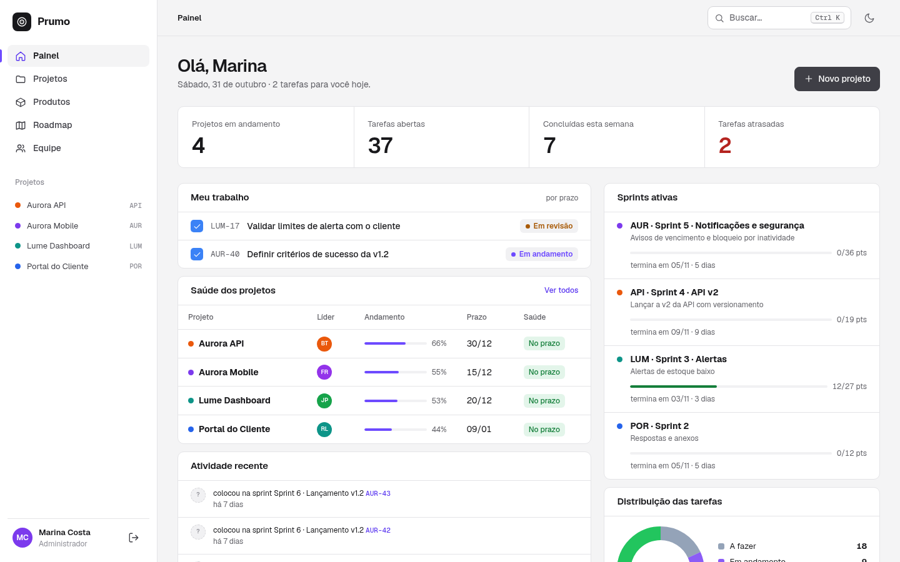
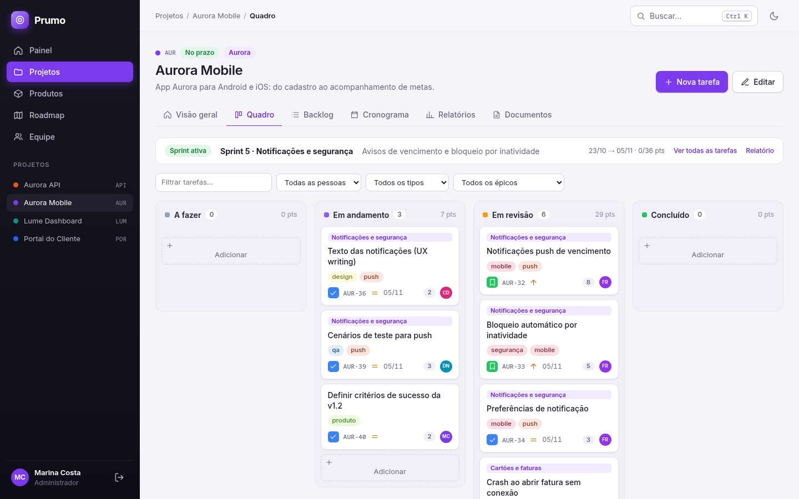
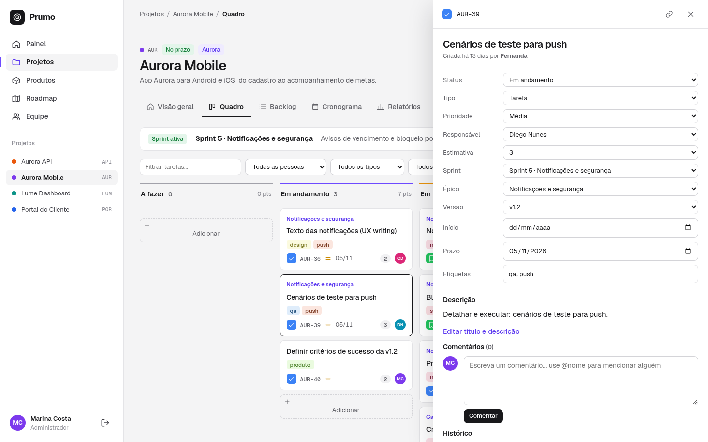
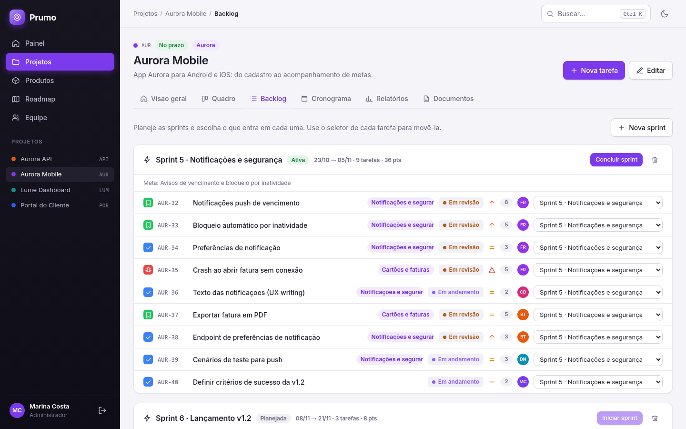
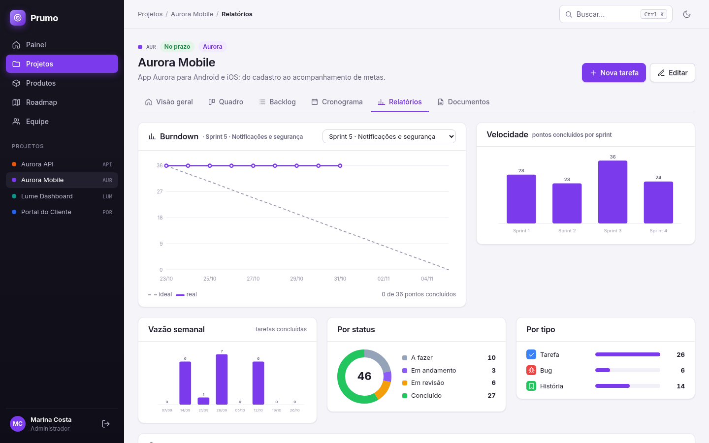
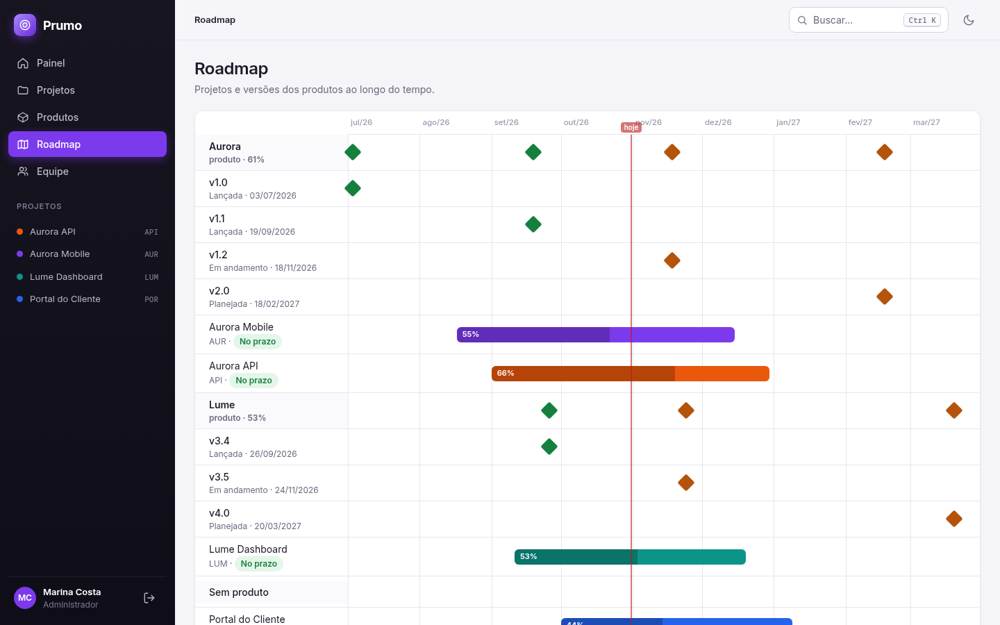
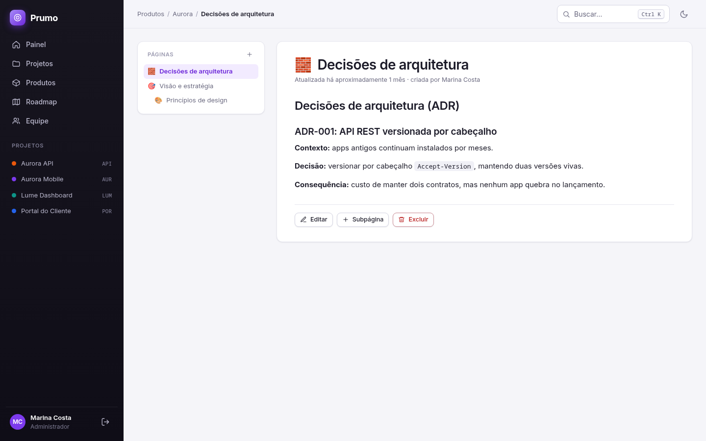

Quadro kanban, sprints com burndown, roadmap de produto e documentos em Markdown, para uma equipe só. Feito em Rails 8.1.







O Prumo é uma aplicação Rails com banco SQLite, então precisa de um servidor e não roda no GitHub Pages. Com Ruby 4.0.9:
git clone https://github.com/PedroMaxis/ProjectMGMT cd ProjectMGMT bin/setup --skip-server # gems, banco e dados de demonstração bin/rails server # http://localhost:3000
Na tela de entrada há login de demonstração com um clique (Marina é admin, Helena é leitora). A senha dos usuários do seed é prumo123.